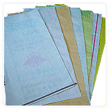
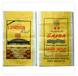
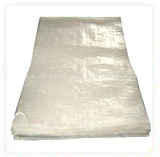
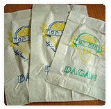
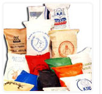
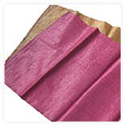
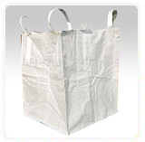
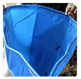

Home >> Products
PP Woven Bags
|

Woven polypropylene bags or simply woven PP bags are considered to be the toughest packaging bags, widely used to pack materials for grain, milling and sugar industry. Additionally, these bags also find wide application in fodder industry, chemicals and fertilizers industry besides cement industry and other applications like sand, metal parts and concrete etc.
We offer 100% custom designed polypropylene woven bags and polypropylene woven sacks as per the required specifications of the customer.
Salient Features :
- Flexible and high strength

- Double side print
- Water & dust proof design
- Heat/Wave Cut & hemmed top
- Flat or anti-slip weaving
Technical Specifications :
- UV Protection: 200 to 1600 hours
- Denier (thickness of woven polypropylene strands): 400 & above
- Width: 15"- 33"
- Length: As specified by the customer
- Colors: As specified by the customer
Application :
The PP woven sacks and PP woven bags are ideal for the packaging of products, which include the following:
- Fertilizers
- Food grains
- Sugar
- Cashew nuts
- Animal feeds
|
PP Woven Laminated Gussetted Bags
|

PP woven laminated gusseted bags can stand vertically due to its unique construction. They have sides and balloon out to hold the product with hard flat base. These gusseted bags are ideal for the storage of various agri products and food grains. In addition to storage of the products, the gusseted bags have the biggest advantage of optimum space utilization.
Salient Features :
- Infolded side for easier loading of material
- Flexible and high strength
- UV stabilized
- Made from food grade material
- Printing option on gusseted portion

Technical Specifications :
- UV Protection: 200 to 1600 hours
- Denier (thickness of woven polypropylene strands): 400 & above
- Width: 15"- 33"
- Length: As specified by the customer
- Colors: As specified by the customer
Application :
The PP woven gusseted bags are used for storage of fine granules like:
- Food Products : Flour, Corn, Grain, Sugar, Salt, Animal Feed
- Chemicals & Fertilizers : Carbon, Caustic Soda, Potash, Phosphates
- Petro Chemicals : Polymers, Granules, PVC Compound, Master Batches
|
PP WOVEN BOPP
|

We offer high quality wholesale bags that are used for packaging of products such as rice, flour, salt, chocker, maida, animal feed and more. Made from high quality material, these bags have a high strength and are ideal for bulk packaging of various products. Our range of BOPP bags provide convenience in use, perfect protection for external factors and at the same time do not affect the inherent attributes of the product. We can offer tailor made bags to meet the specific requirements of different applications.
Technical Specifications :
- UV Protection: 200 to 1600 hours
- Denier (thickness of woven polypropylene strands): 400 & above
- Width: 15"- 33"

- Length: As specified by the customer
- Colors: As specified by the customer
Application :
These bags are used for packing the following :
- Rice
- Flour
- Salt
- Choker
- Maida
- Animal Feed
- Bird Feed
- Agro Products
|
MATT FINISH BAGS
|

The perforated bags are suitable for packaging of fresh baked food and vegetables. These bags have air holes that allow the produce to breath, enhancing the shelf like of the products. Our perforated bags are made from bio-degradable cast polypropylene films that are flexible and strong. Perforated bags can also be used for packaging of material which are hot while Packing such as cement.
Salient Features :
- High clarity
- Micro perforation that keeps produce fresh
- Made from food grade polypropylene
- Cost-effective

- Better moisture retention properties
Technical Specifications :
- UV Protection: 200 to 1600 hours
- Denier (thickness of woven polypropylene strands): 400 & above
- Width: 15"- 33"
- Length: As specified by the customer
- Colors: As specified by the customer
Application :
The perforated bags find major application in food processing industries for packaging :
- Snacks
- Bread & bakery
- Dried foods
- Frozen foods
- Confectionery
- Rice and other food grains
Back to Top
|
|
Our Products
Contact Us
- Tel: 021-527456
- Fax: 021-527457
- Mobile: 9842436573
- Email: govindatal@gmail.com
|